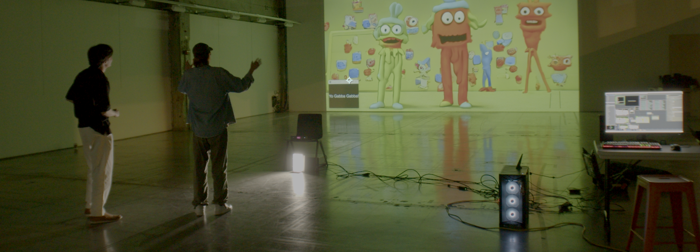

Photobooth AI: StreamDiffusion Workflows
ComfyUI Local AI
10/15/2025
This real-time AI photobooth installation uses TouchDesigner and StreamDiffusion to generate AI images with live camera input and instant physical prints. The system eliminates typical latency issues associated with diffusion models by leveraging StreamDiffusion's optimized pipeline, which enables sub-second generation times suitable for interactive installations and live events.
The workflow integrates a live camera feed into TouchDesigner, where users can input custom text prompts through a touch interface or keyboard. StreamDiffusion processes the camera input and text prompt in real-time, generating stylized images that reflect both the user's physical presence and their creative direction. Generated images are sent directly to a thermal or photo printer, creating physical takeaways that bridge the digital generation process with tangible outputs.
StreamDiffusion's architecture is key to making this experience feel instantaneous. Unlike traditional Stable Diffusion workflows that can take 30+ seconds per image, StreamDiffusion uses batch processing and pipeline optimization to achieve near-real-time performance. This makes it viable for photobooth scenarios where users expect immediate feedback and quick turnaround times. The TouchDesigner environment handles the UI/UX layer, camera management, and printer communication, while StreamDiffusion focuses purely on the generation pipeline.
This project explores the intersection of AI art generation and interactive physical installations. By removing the waiting period typically associated with AI image generation, the photobooth creates a more intuitive and engaging user experience. People can experiment with different prompts, see results immediately, and walk away with a physical artifact. It's particularly effective for events, exhibitions, and public installations where accessibility and immediacy are priorities over the highest possible image quality or resolution.
Example inputs and outputs are shown on the side.
▲ DESCRIPTION OF THE FUCKING IMAGE ▲

▲ DESCRIPTION OF THE FUCKING IMAGE ▲

▲ DESCRIPTION OF THE FUCKING IMAGE ▲